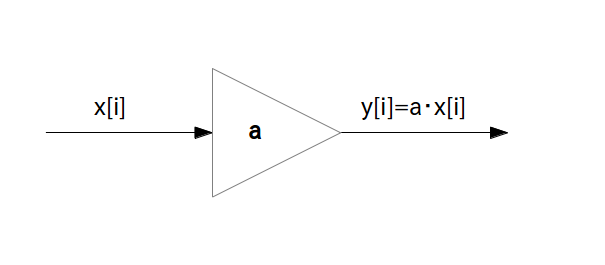

伝達関数 $\textrm{H}(z) = z^{-1}$ は遅延素子を意味し、$z^{-1}$ を四角で囲む。

どんな複雑な伝達関数を持つディジタル線形時不変フィルタも、実は
「乗算器」「遅延素子」「加算器」
と呼ばれるたった 3 つの基本パーツだけが組み合わされて出来ています。
これら基本パーツのうち「乗算器」「遅延素子」はディジタル線形時不変フィルタの一種なので伝達関数を持っています。
ここではこれら基本パーツの伝達関数とそれに対応するプロック図の描き方について説明します。
また基本パーツのプログラム表現についても示します。
あるフィルタのインパルス応答が $h[i] = \{a,0,0,\cdots\}$ であるとき($a$ は実数)、伝達関数は $h[i]$ をZ変換して
\[ \textrm{H}(z) = a \]となりますが、この伝達関数を持つフィルタの事を「乗算器」と呼びます。
乗算器に $x[i]$ を入力すると出力は畳み込み演算により
\[ y[i] = \sum_{n = 0}^{\infty} \{ h[n] \cdot x[i-n] \} = a \cdot x[i] \]
の様に入力が $a$ 倍されて出てきます。
乗算器のブロック図は次の図で表されます。
伝達関数 $\textrm{H}(z) = a$ を持つフィルタは乗算器を意味し、$a$ を三角で囲む(※)。
※ 四角で囲んでいる文献もあります。
また乗算器はブログラムでは次のように表されます。
y[i] = a * x[i]
あるフィルタのインパルス応答が $h[i] = \{0,1,0,0,\cdots\}$ であるとき、伝達関数は $h[i]$ をZ変換して \[ \textrm{H}(z) = z^{-1} \]
となりますが、この伝達関数を持つフィルタの事を「(1 時刻)遅延素子」と呼びます。
遅延素子に $x[i]$ を入力すると出力は畳み込み演算により
\[ y[i] = \sum_{n = 0}^{\infty} \{ h[n] \cdot x[i-n] \} = x[i-1] \]の様に 1 時刻前の入力が遅れて出てきます。
遅延素子のブロック図は次の図で表されます。
伝達関数 $\textrm{H}(z) = z^{-1}$ は遅延素子を意味し、$z^{-1}$ を四角で囲む。
また遅延素子はブログラムでは次のように表されます。
y[i] = x[i-1]
$x_0[i]$ から $x_{(\textrm{M}-1)}[i]$ まで計 $\textrm{M}$ 個の入力信号 $x_n$ があるとき、それらを足しあわせて
\begin{align*} y[i] = \sum_{n=0}^{\textrm{M}-1} x_n[i] \end{align*}を出力する装置を「加算器」と呼びます。
加算器は厳密に言うと次のページで説明する「並列結合」であって、フィルタでは無いので伝達関数はありませんが、ブロック図は次の様に表されます。
加算器は＋記号を丸で囲む(※)。
※ 四角で囲んでいる文献もあります。また＋ではなくて SUM や Σ を使う場合もあります。
また加算器はブログラムでは次のように表されます。
x[ n ][ i ] を n 番目の入力信号の時刻 i における値とすると
y[i] = 0; for( n = 0; n < M; ++n ) y[i] += x[ n ][ i ]